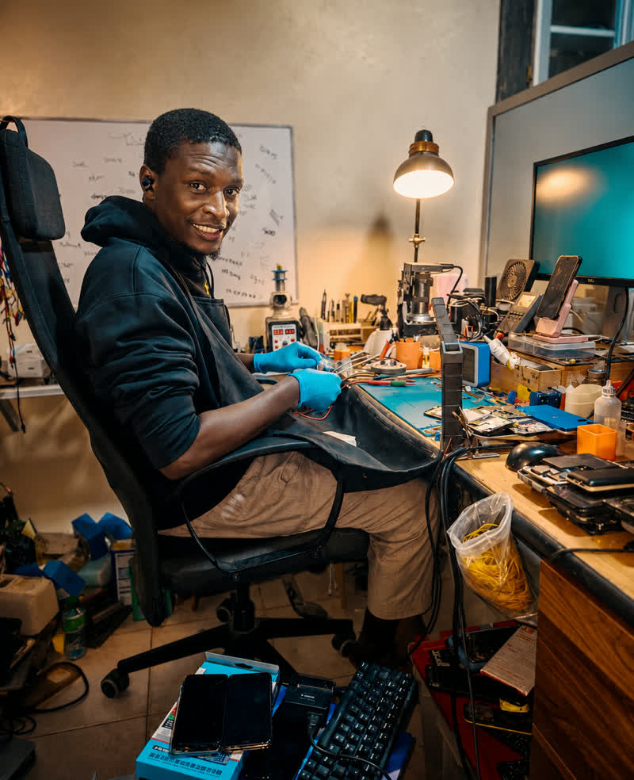

Réparation mobile
Écran, connecteur, batterie, charge, caméra ou panne complexe : votre téléphone retrouve sa pleine capacité.
Chargement...
Téléphones, ordinateurs et cartes électroniques : OT404 COMP. diagnostique, répare et redonne vie à vos appareils avec une expertise pointue en microsoudure.
Diagnostic précis
Intervention soignée, conseil honnête.
Chaque panne est étudiée avec attention pour trouver la solution la plus juste.
Écran, connecteur, batterie, charge, caméra ou panne complexe : votre téléphone retrouve sa pleine capacité.
Diagnostic, optimisation et réparation matérielle pour PC et ordinateurs portables.
Nous contacter →Intervention minutieuse sur cartes mères et composants électroniques de petite taille.
Nous contacter →Vos autres appareils électroniques sont également pris en charge selon la nature de la panne.
Nous contacter →La microsoudure consiste à réparer les très petits composants d'une carte électronique : connecteurs, pistes, circuits et puces. Grâce à des outils de précision et à un microscope, il est souvent possible de corriger une panne sans remplacer tout l'appareil.

Une panne électronique demande du calme, les bons outils et surtout un diagnostic fiable. Notre approche va directement à l'essentiel.
Confier votre appareil ↗Identifier la vraie cause avant d'intervenir.
Un travail minutieux, adapté à chaque carte.
Une explication claire avant la réparation.
Dakar, Sénégal

Chez OT404 COMP., vous échangez directement avec le technicien qui analyse votre panne et intervient sur votre appareil.
Une discussion claire avant toute intervention.
Des outils adaptés aux réparations minutieuses.
Partagez votre expérience directement sur WhatsApp.
"Mon iPhone avait l'écran cassé et ne chargeait plus. OT404 a tout réparé en 2h. Service rapide et prix honnête."
"Mon laptop ne démarrait plus après un dégât d'eau. Diagnostic gratuit et réparation en 24h. Je recommande vivement."
"Carte mère de mon Samsung grillée. D'autres avaient dit impossible, OT404 a réussi la microsoudure. Bravo !"
Le diagnostic est gratuit. Nous analysons votre appareil et vous donnons un devis clair avant toute intervention.
La plupart des réparations sont faites en 24 à 48h. Les cas complexes (microsoudure) peuvent prendre 2 à 3 jours.
Oui, nous réparons iPhone, Samsung, Huawei, Xiaomi, Tecno, Infinix et tous les autres modèles Android et iOS.
Si nous ne pouvons pas réparer votre appareil, vous ne payez rien. Pas de réparation, pas de frais.
Oui, toutes nos réparations sont couvertes par une garantie de 30 jours sur les pièces et la main-d'œuvre.
Le plus rapide : envoyez-nous un WhatsApp au 77 294 79 58 avec une photo de votre panne. Nous répondons sous 30 min.
Appelez-nous ou envoyez un message WhatsApp pour expliquer votre panne.